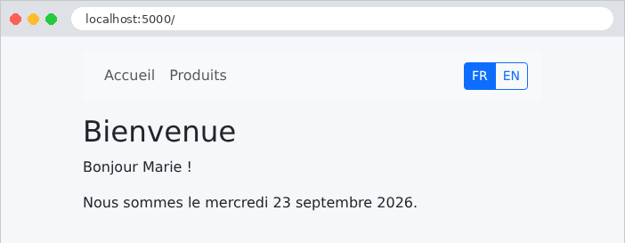

5. Internacionalização
Uma aplicação internacionalizada exibe seus textos no idioma do usuário. O estudo de caso está em francês e inglês. O princípio é simples: as views não contêm mais texto, e sim chaves ([MENU.HOME]), e um dicionário para cada idioma associa um texto a cada chave. O idioma selecionado é armazenado em um cookie.
O ecossistema do [Flask] oferece uma extensão para essa finalidade, [Flask-Babel], que se apoia no sistema de tradução padrão [gettext]: os textos são extraídos do código por uma ferramenta, traduzidos em arquivos [.po] e depois compilados em arquivos [.mo]. É um sistema poderoso, mas exige ferramentas específicas e uma etapa de compilação. Em vez disso, escreveremos uma pequena classe que lê dicionários JSON: são os mesmos arquivos das versões [ASP.NET Core MVC], [NestJS], e [Spring MVC] do estudo de caso, e seu formato pode ser lido e escrito sem nenhuma ferramenta especial. A biblioteca [Babel], por outro lado, continua sendo usada para formatar datas e valores (Exemplo 16).
5.1. Exemplo 22: Uma aplicação bilíngue
| 22-i18n/
├── app.py
├── controllers/
│ ├── language.py
│ └── pages.py
├── i18n/
│ ├── en.json
│ └── fr.json
├── static/css/
│ └── styles.css
├── templates/
│ ├── fragments/
│ │ └── navbar.html
│ ├── layout.html
│ └── pages/
│ ├── home.html
│ └── products.html
└── translation/
├── formats.py
└── translator.py
|
5.1.1. Dicionários
O arquivo [i18n/fr.json]:
| {
"MENU": {
"HOME": "Accueil",
"PRODUCTS": "Produits"
},
"HOME": {
"TITLE": "Bienvenue",
"HELLO": "Bonjour {name} !",
"DATE": "Nous sommes le {date}."
},
"PRODUCTS": {
"TITLE": "Nos produits",
"NAME": "Produit",
"PRICE": "Prix",
"COUNT": "{n} produit(s) au catalogue."
}
}
|
As chaves são agrupadas por tema dentro de objetos JSON aninhados: o texto de menu “Home” tem a chave completa [MENU.HOME]. Uma string de texto pode conter placeholders, escritos como [{name}], que são substituídos durante a tradução. O arquivo [i18n/en.json] tem exatamente as mesmas chaves:
| {
"MENU": {
"HOME": "Home",
"PRODUCTS": "Products"
},
"HOME": {
"TITLE": "Welcome",
"HELLO": "Hello {name}!",
"DATE": "Today is {date}."
},
"PRODUCTS": {
"TITLE": "Our products",
"NAME": "Product",
"PRICE": "Price",
"COUNT": "{n} product(s) in the catalogue."
}
}
|
5.1.2. O serviço de tradução: translation/translator.py
| # translation/translator.py: o serviço de tradução
import json
import re
from pathlib import Path
from flask import g
class Translator:
LANGUAGES = ("fr", "en")
DEFAULT_LANGUAGE = "en"
# {name}: um parâmetro em um texto
PARAMETER = re.compile(r"\{(\w+)\}")
def __init__(self, folder: Path):
# idioma -> (chave completa "HOME.HELLO" -> texto)
self._dictionaries: dict[str, dict[str, str]] = {}
for language in self.LANGUAGES:
with open(folder / f"{language}.json", encoding="utf-8") as file:
self._dictionaries[language] = self._flatten(json.load(file))
# o idioma suportado que corresponde a [code]: "fr" -> "fr"; "de" ou None -> "en"
@classmethod
def language(cls, code: str | None) -> str:
return code if code in cls.LANGUAGES else cls.DEFAULT_LANGUAGE
# translate("HOME.HELLO", name="Marie") -> "Hello Marie!", no
# idioma da requisição atual (g.language, veja app.py)
def translate(self, key: str, **parameters) -> str:
# uma chave ausente exibe a própria chave: um esquecimento fica visível na tela
text = self._dictionaries[g.language].get(key, key)
# cada {name} é substituído pelo valor do parâmetro de mesmo nome
return self.PARAMETER.sub(
lambda m: str(parameters.get(m.group(1), m.group(0))), text)
# { "MENU": { "HOME": "Home" } } -> { "MENU.HOME": "Home" }
@classmethod
def _flatten(cls, node: dict, prefix: str = "") -> dict[str, str]:
result = {}
for key, value in node.items():
full_key = f"{prefix}.{key}" if prefix else key
if isinstance(value, dict):
result.update(cls._flatten(value, full_key))
else:
result[full_key] = value
return result
|
- linhas 11–12: os idiomas suportados e o idioma padrão — atributos de classe compartilhados por todos os objetos da classe e acessíveis sem um objeto ([Translator.LANGUAGES]);
- linha 15: a expressão regular de um parâmetro: uma chave de abertura ([\{], precedida de uma [\] porque a chave tem um significado específico nas expressões regulares), um ou mais caracteres de palavra ([\w+]) e uma chave de fechamento. Os parênteses capturam o nome do parâmetro. [re.compile] analisa a expressão uma vez por todas;
- linhas 17–22: o construtor lê os dicionários uma única vez, quando o serviço é criado. [json.load] converte o conteúdo de um arquivo JSON em objetos [Python] (dicionários aninhados). [with open(...) as file] abre o arquivo e garante que ele seja fechado ao final do bloco; [encoding="utf-8"] é essencial, pois a codificação padrão depende do sistema (no [Windows], nem sempre é [UTF-8]);
- Linhas 25–27: um método de classe (decorador [@classmethod]) recebe a classe ([cls]) em vez de um objeto; ele é chamado na própria classe: [Translator.language("en")]. Retorna o idioma suportado correspondente a um código, ou o idioma padrão se o código for desconhecido ou estiver ausente;
- linhas 31–36: a tradução de uma chave, no idioma da requisição atual, lido de [g.language] (veja o Exemplo 16). Uma chave ausente do dicionário é exibida como está: uma omissão fica imediatamente visível na tela. Os parâmetros são recebidos como parâmetros nomeados ([**parameters]); o método de expressão regular [sub] substitui cada parâmetro encontrado no texto pelo resultado de uma função — neste caso, uma função anônima ([lambda m: ...]) — que recebe a correspondência encontrada ([m]): [m.group(1)] é o nome capturado, [m.group(0)] é o texto completo [{name}], que é mantido se o parâmetro não foi fornecido;
- Linhas 40–48: os objetos JSON aninhados são “achatados” em um único dicionário, cujas chaves são as chaves completas: [{"MENU": {"HOME": "Home"}}] torna-se [{"MENU.HOME": "Home"}]. O método é recursivo: ele chama a si mesmo para cada objeto aninhado, usando a chave atual como prefixo.
| # translation/formats.py: datas e valores, formatados no idioma da requisição (veja o exemplo 16)
from datetime import date
from decimal import Decimal
from babel.dates import format_date
from babel.numbers import format_currency
from flask import g
# uma data por extenso
def long_date(day: date) -> str:
return format_date(day, format="full", locale=g.language)
# um valor em euros
def money(amount: Decimal) -> str:
return format_currency(amount, "EUR", locale=g.language)
|
Os filtros do Exemplo 16, que desta vez usam [g.language]. [Babel] aceita um único idioma ([fr], [en]) bem como um idioma e um país ([fr_FR]); para [en], aplica as convenções dos EUA.
5.1.4. Configuração: app.py
| # app.py: a aplicação do exemplo 22
from pathlib import Path
from flask import Blueprint, Flask, g, request
from controllers.language import LANGUAGE_COOKIE, language
from controllers.pages import pages
from translation import formats
from translation.translator import Translator
# Bootstrap, compartilhado pelos exemplos (veja o exemplo 15)
BOOTSTRAP = Path(__file__).resolve().parent.parent / "common" / "bootstrap"
def create_app():
app = Flask(__name__)
app.jinja_env.trim_blocks = True
app.jinja_env.lstrip_blocks = True
# o serviço de tradução: os dicionários, lidos UMA ÚNICA VEZ, na inicialização
translator = Translator(Path(app.root_path) / "i18n")
app.extensions["translator"] = translator
app.register_blueprint(Blueprint("bootstrap", __name__, static_folder=BOOTSTRAP,
static_url_path="/bootstrap"))
app.register_blueprint(language)
app.register_blueprint(pages)
# o idioma de cada requisição: o do cookie [language], inglês caso contrário
@app.before_request
def set_language():
g.language = Translator.language(request.cookies.get(LANGUAGE_COOKIE))
# nas views: {{ t('KEY') }}, {{ day | long_date }}, {{ price | money }}
app.add_template_global(translator.translate, "t")
app.add_template_filter(formats.long_date)
app.add_template_filter(formats.money)
return app
if __name__ == "__main__":
create_app().run(port=5000, debug=True)
|
- linhas 20–21: o serviço, criado uma única vez na inicialização. [app.root_path] é a pasta da aplicação (a de [app.py]);
- Linhas 28–30: antes de cada ação, o idioma da requisição é definido como o do cookie [language] se ele existir e for suportado; caso contrário, assume o inglês. [request.cookies] é o dicionário de cookies enviados pelo navegador;
- linha 33: o método [translate] do serviço é disponibilizado às views como uma função global com um nome curto, [t] (o segundo parâmetro de [add_template_global]). Um método de objeto é usado como uma função: [translator.translate] é um método associado ao objeto [translator].
5.1.5. Seleção do idioma: controllers/language.py
| # controllers/language.py: a escolha do idioma
from urllib.parse import urlsplit
from flask import Blueprint, abort, redirect, request
from translation.translator import Translator
language = Blueprint("language", __name__)
LANGUAGE_COOKIE = "language"
# GET /language/fr: guarda a escolha em um cookie e volta para a página anterior
@language.get("/language/<code>")
def change(code):
if code not in Translator.LANGUAGES:
abort(404)
response = redirect(origin_page())
# o cookie: um ano de vida, ilegível pelo JavaScript da página (httponly),
# nunca enviado com uma requisição POST vinda de outro site (samesite)
response.set_cookie(LANGUAGE_COOKIE, code, max_age=365 * 24 * 3600, httponly=True,
samesite="Lax")
return response
# a página de onde viemos (cabeçalho Referer), da qual mantemos apenas o caminho:
# redirecionar para um endereço completo vindo da requisição permitiria
# enviar o usuário a outro site (falha de "open redirect")
def origin_page() -> str:
url = urlsplit(request.headers.get("Referer", ""))
path = url.path
# "//site.com/..." seria entendido pelo navegador como um endereço
# de OUTRO site: também rejeitado
if not path.startswith("/") or path.startswith("//"):
return "/"
return f"{path}?{url.query}" if url.query else path
|
- linha 16: um código de idioma desconhecido: 404;
- linha 18: a ação responde com um redirecionamento para a página de onde o usuário veio: o usuário volta a essa página, no novo idioma;
- Linhas 21–22: a resposta inclui um cookie, que o navegador enviará de volta a cada requisição. [max_age] é sua duração, em segundos: um ano. [httponly=True] o torna invisível para o [JavaScript] da página; [samesite="Lax"] impede que o navegador o envie com uma requisição POST originada em outro site. Diferentemente do cookie de sessão (exemplo 20), este cookie não é assinado: não há problema se o usuário o modificar, pois o servidor só aceita os idiomas suportados;
- linhas 29–36: a página de origem é indicada pelo cabeçalho [Referer] da requisição (a grafia incorreta, com um único [r], é a usada no padrão HTTP), que o navegador preenche com a URL da página que continha o link. Mas esse cabeçalho vem do cliente, que pode colocar qualquer coisa nele. Redirecionar às cegas para esse endereço transformaria nossa aplicação em um *open redirect*: um link malicioso com o nome do nosso domínio poderia levar o usuário a um site malicioso. Por isso, mantemos apenas o caminho e os parâmetros da URL ([urlsplit] a decompõe em seus componentes) e rejeitamos qualquer caminho que comece por [//], que o navegador interpretaria como o endereço de outro site.
5.1.6. Ações: controllers/pages.py
| # controllers/pages.py: as ações não sabem nada do idioma: elas
# fornecem dados, as views os traduzem e os formatam
from dataclasses import dataclass
from datetime import date
from decimal import Decimal
from flask import Blueprint, render_template
pages = Blueprint("pages", __name__)
@dataclass
class Product:
name: str
price: Decimal
@pages.get("/")
def home():
return render_template("pages/home.html", name="Marie", today=date(2026, 9, 23))
@pages.get("/products")
def products():
return render_template("pages/products.html", products=[
Product("Keyboard", Decimal("25")),
Product("Mouse", Decimal("12.5")),
Product("Screen", Decimal("1149")),
])
|
As ações são agnósticas quanto ao idioma: fornecem dados brutos (um nome, uma data, valores). A tradução e a formatação ficam a cargo das views.
5.1.7. Tradução nas views
| <!doctype html>
{# g.language: o idioma da requisição, "fr" ou "en" #}
<html lang="{{ g.language }}">
<head>
<meta charset="utf-8">
{# o título é uma CHAVE, fornecida pela página (variável title_key), traduzida pelo layout #}
<title>{{ t(title_key) }}</title>
<link rel="stylesheet" href="{{ url_for('bootstrap.static', filename='css/bootstrap.min.css') }}">
<link rel="stylesheet" href="{{ url_for('static', filename='css/styles.css') }}">
</head>
<body>
<div class="container py-3">
{% include "fragments/navbar.html" %}
<main>
{% block content %}{% endblock %}
</main>
</div>
</body>
</html>
|
- Linha 3: o atributo [lang] da página indica seu idioma a navegadores, mecanismos de busca e leitores de tela;
- linha 7: o título da página é diferente para cada página, mas é traduzido pelo template. Cada página fornece a chave de seu título em uma variável, [title_key].
| <nav class="navbar navbar-expand bg-light rounded mb-3 px-3">
<div class="navbar-nav me-auto">
{# t('KEY'): a tradução de uma chave, no idioma da requisição #}
<a class="nav-link" href="/">{{ t("MENU.HOME") }}</a>
<a class="nav-link" href="/products">{{ t("MENU.PRODUCTS") }}</a>
</div>
{# o idioma atual fica destacado #}
<div class="btn-group btn-group-sm">
{% for code in ["fr", "en"] %}
<a class="btn {{ 'btn-primary' if g.language == code else 'btn-outline-primary' }}"
href="/language/{{ code }}">{{ code | upper }}</a>
{% endfor %}
</div>
</nav>
|
- linhas 4–5: os textos do menu, traduzidos;
- linhas 9–12: um botão por idioma, que leva à ação [/language/<code>]. O idioma atual é destacado ([btn-primary], botão preenchido).
| {% extends "layout.html" %}
{# uma variável definida FORA dos blocos é visível para o layout #}
{% set title_key = "HOME.TITLE" %}
{% block content %}
<h1>{{ t("HOME.TITLE") }}</h1>
{# um parâmetro: um parâmetro nomeado da função t #}
<p>{{ t("HOME.HELLO", name=name) }}</p>
{# a data, formatada primeiro e depois passada como parâmetro [date] #}
<p>{{ t("HOME.DATE", date=today | long_date) }}</p>
{% endblock %}
|
- linha 3: uma variável definida fora dos blocos de uma página que estende um template é visível para o template: é assim que a página passa a chave de seu título ao template. (Uma variável definida dentro de um bloco, por outro lado, permaneceria local a esse bloco.);
- linha 8: um parâmetro de texto é um parâmetro nomeado da função [t];
- Linha 10: a data, formatada no idioma da requisição e depois passada como parâmetro.
| {% extends "layout.html" %}
{% set title_key = "PRODUCTS.TITLE" %}
{% block content %}
<h1>{{ t("PRODUCTS.TITLE") }}</h1>
<table class="table table-sm w-auto">
<thead><tr><th>{{ t("PRODUCTS.NAME") }}</th><th class="text-end">{{ t("PRODUCTS.PRICE") }}</th></tr></thead>
<tbody>
{% for product in products %}
<tr>
<td>{{ product.name }}</td>
<td class="text-end">{{ product.price | money }}</td>
</tr>
{% endfor %}
</tbody>
</table>
<p>{{ t("PRODUCTS.COUNT", n=products | length) }}</p>
{% endblock %}
|
- Linha 17: um parâmetro calculado. Os nomes dos produtos, porém, não são traduzidos: são dados que, em uma aplicação real, viriam de um banco de dados.
5.1.8. Execução
A página inicial, em inglês (o idioma padrão) e depois em francês, após clicar no botão “FR”:


A página de produtos, nos dois idiomas. Os valores seguem as convenções de cada idioma:


A troca de idioma, vista com o [curl]. A opção [-H] fornece o cabeçalho [Referer] que o navegador enviaria:
| curl -i -H "Referer: http://localhost:5000/products" http://localhost:5000/language/en
|
| HTTP/1.1 302 FOUND
Content-Type: text/html; charset=utf-8
Content-Length: 205
Location: /products
Set-Cookie: language=en; Expires=Sun, 26 Sep 2027 13:37:04 GMT; Max-Age=31536000; HttpOnly; Path=/; SameSite=Lax
...
|
O redirecionamento leva de volta à página de origem, e o cookie é definido por um ano. Um [Referer] que aponte para outro site não redireciona para lá: apenas seu caminho é mantido.
| curl -i -H "Referer: https://pirate.example/trap" http://localhost:5000/language/en
curl -i -H "Referer: http://localhost:5000//pirate.example/x" http://localhost:5000/language/fr
|
| HTTP/1.1 302 FOUND
...
Location: /trap
HTTP/1.1 302 FOUND
...
Location: /
|
A página [/trap] não existe em nosso site: o usuário receberá um erro 404, mas permanecerá em nosso site. Por fim, a página inicial, solicitada com o cookie [language=en] (opção [-b] do [curl]):
| curl -b "language=en" http://localhost:5000/
|
| <!doctype html>
<html lang="en">
<head>
<meta charset="utf-8">
<title>Welcome</title>
...
<a class="nav-link" href="/">Home</a>
<a class="nav-link" href="/products">Products</a>
...
<h1>Welcome</h1>
<p>Hello Marie!</p>
<p>Today is Wednesday, September 23, 2026.</p>
...
|
Outra maneira de selecionar o idioma seria ler o cabeçalho [Accept-Language] do navegador (Exemplo 12). Os dois costumam ser combinados: o idioma do navegador na primeira visita, seguido do idioma que o usuário selecionou. Este estudo de caso se concentra no cookie, com o inglês como padrão.